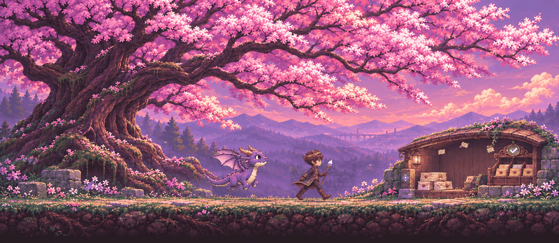

<!doctype html>
<html lang="ko">
<meta charset="utf-8">
<meta name="viewport" content="width=device-width, initial-scale=1">
<title>삽화풍 배너 · V19</title>
<style>
*{box-sizing:border-box}body{margin:0;background:#17121d;color:#eee3ed;font:16px/1.6 system-ui,sans-serif}
main{max-width:864px;margin:48px auto;padding:0 32px}h1{font-size:23px;margin:0 0 6px}p{color:#bbaabd;margin:0 0 24px}
video,img{display:block;width:100%;height:auto;border-radius:10px;background:#211825}details{margin-top:26px}
summary{cursor:pointer;margin-bottom:16px}a{color:#edbbd4}nav{margin:20px 0;display:flex;gap:24px;flex-wrap:wrap}
</style>
<main>
<h1>삽화풍 배너 · V19</h1>
<p>따뜻한 숲길을 함께 걷는 소년과 작은 용. 23초 반복.</p>
<video src="exports/banner-v5-storybook.mp4" poster="exports/poster.png" controls autoplay muted loop playsinline></video>
<nav><a href="exports/banner-v5-storybook.gif" download>GIF 저장</a><a href="exports/banner-v5-storybook.mp4" download>MP4 저장</a><a href="README.md">수정·검수 기록</a></nav>
<details><summary>GIF로 보기</summary></details>
</main>
</html>
